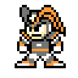

Un robot créé par le Dr. Light pour être son assistant de laboratoire. C'est un jeune garçon qui s'efforce toujours à faire le bien. Une nouvelle fois, il a demandé à être modifié afin de pouvoir sauver le monde.
Dr. Light
Un scientifique de génie dont les innombrables créations font de lui une sommité en matière de robotique. Il tient à Mega Man et à Roll comme s'ils étaient ses propres enfants. Son désire le plus cher est de voir un monde débarrassé de toute souffrance.
Dr. Wily
Un brillant scientifique responsable de nombreux méfaits. Il étudiait récemment l'épidémie de roboenza, mais qu'a-t-il vraiment à y gagner ?
Roll
Robot-assistante créée par le Dr. Light. Roll est la sœur de Mega Man. C'est également un fin cordon-bleu ainsi qu'une parfaite femme d'intérieur.
Auto
Robot-assistant créé par le Dr. Light. Il passe ses journées à trouver des moyens d'aider Mega Man dans ses missions.
Rush
Le fidèle compagnon robotisé à quatre pattes de Mega Man.
Proto Man
Un ancien prototype de robot créé par le Dr. Light. Il a plus d'une fois volé au secours de Mega Man.
Bass

Un robot conçu par le Dr. Wily, c'est le plus grand rival de Mega Man.